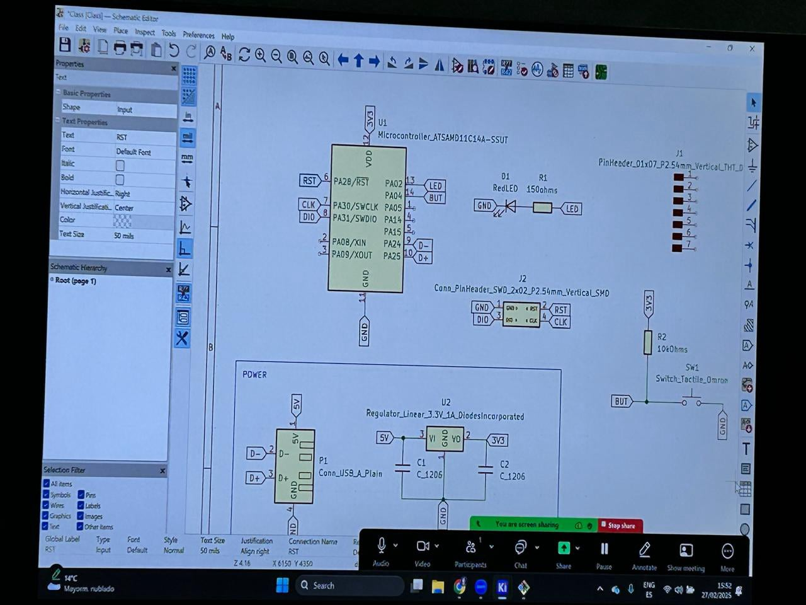
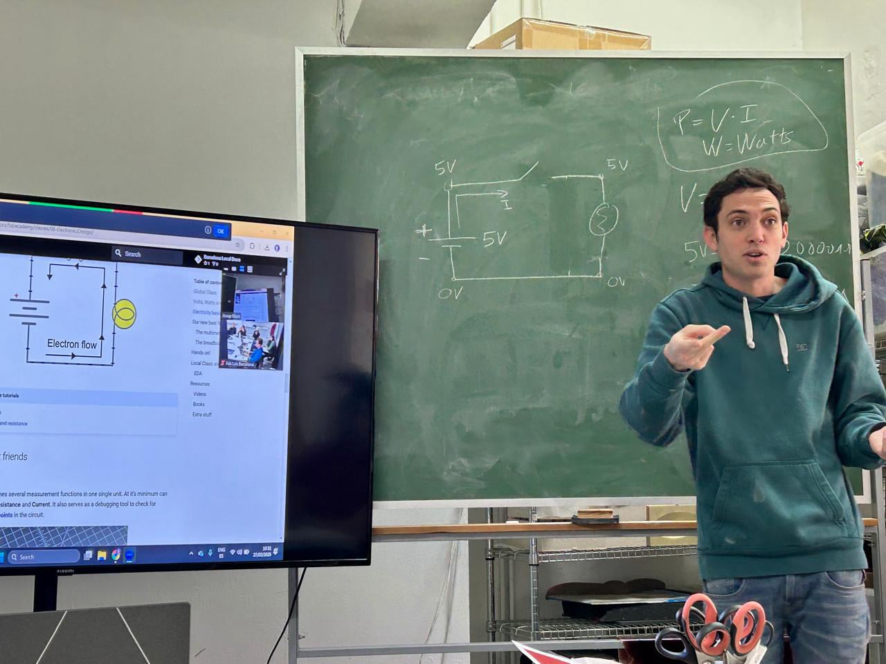
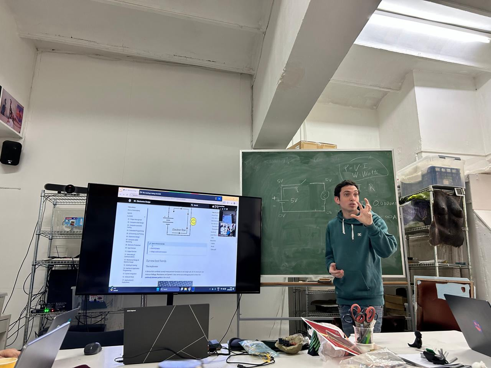
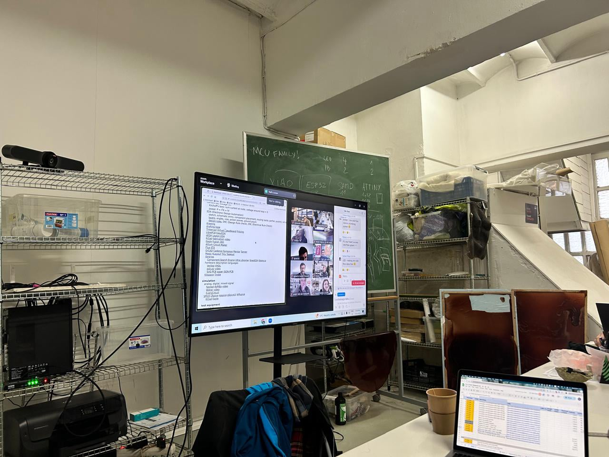
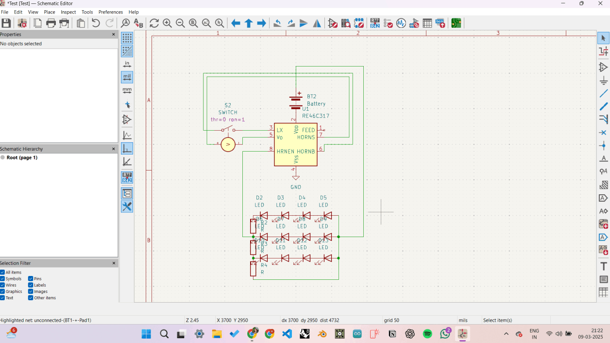

Offline Website BuilderELECTRONICS DESIGN
This course introduced us to the foundational principles of electronics and circuit design, with a strong focus on hands-on learning through PCB creation. We began by learning how to read and interpret circuit diagrams, identify and use electronic components such as resistors, capacitors, LEDs, and voltage regulators, and understand how they interact in a functioning circuit. Using KiCad, we designed our own custom PCB layouts and then fabricated them ourselves using milling and soldering techniques.
The course provided a full-cycle experience—starting from a conceptual design on software to physically producing and testing a working electronic board. This practical approach not only strengthened our technical knowledge but also built confidence in creating functional prototypes from scratch.
In the field of design, especially when working at the intersection of technology, interaction, and physical computing, understanding electronics is essential. It empowers designers to bring their ideas to life in tangible forms, enhances collaboration with engineers, and supports the creation of more informed, realistic, and innovative solutions. This knowledge bridges the gap between abstract concepts and real-world applications—making designers more versatile and impactful in multidisciplinary projects.




I wanted to use this class as an opportunity to design a custom PCB with multiple LEDs and a piezoelectric sensor. The idea was that when someone tapped the sensor, the LEDs would light up in response. I imagined taking it a step further—connecting the PCB to a visual system, like TouchDesigner, to create an immersive experience where a simple touch could trigger both light and digital visuals. It was my way of blending something physical and tangible with something more abstract and visual, creating a multisensory interaction that feels alive and responsive. This project allowed me to explore how electronics can be a powerful medium for storytelling and experiential design.

I created a PCB board design with 12 LEDs connected in a parallel circuit to a peizo electric sensor. The idea was for the peizo electric sensor to act like a switch that would activate the LEDs. The board seemed to function on the software KICAD. I was overall satisfied with the design.
For my next steps, I’d like to fully fabricate the PCB and start gathering data from it. My plan is to connect the piezoelectric sensor to an Arduino and use it to get numerical values based on physical interaction. Once I have that data, I want to bring it into TouchDesigner and use it to drive a visual—basically creating a direct connection between touch, light, and digital imagery.
Before I get there, I need to go back and fix a few errors I'm currently facing in KiCad to ensure the board is designed correctly. After that, I’ll move on to fabricating the board and testing it to make sure everything is working as it should. My focus is on building a reliable, functional circuit that can serve as a bridge between the physical and digital elements of the experience I’m trying to create.
Offline Website Builder